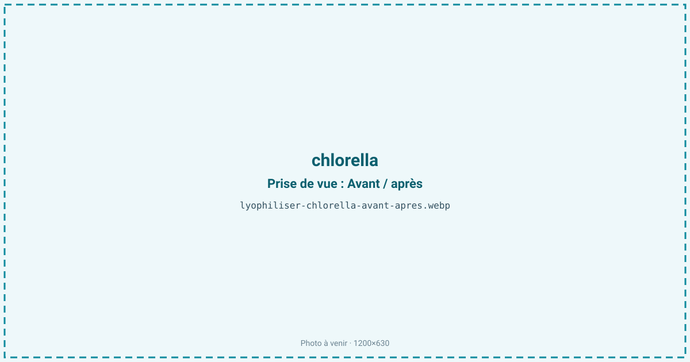
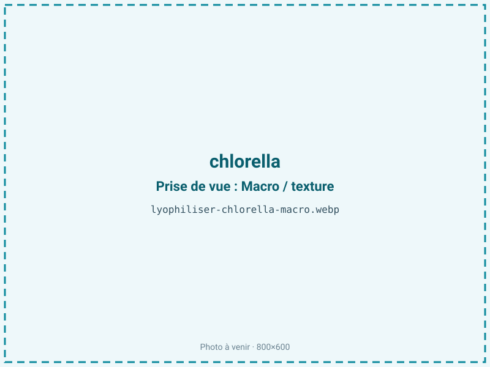
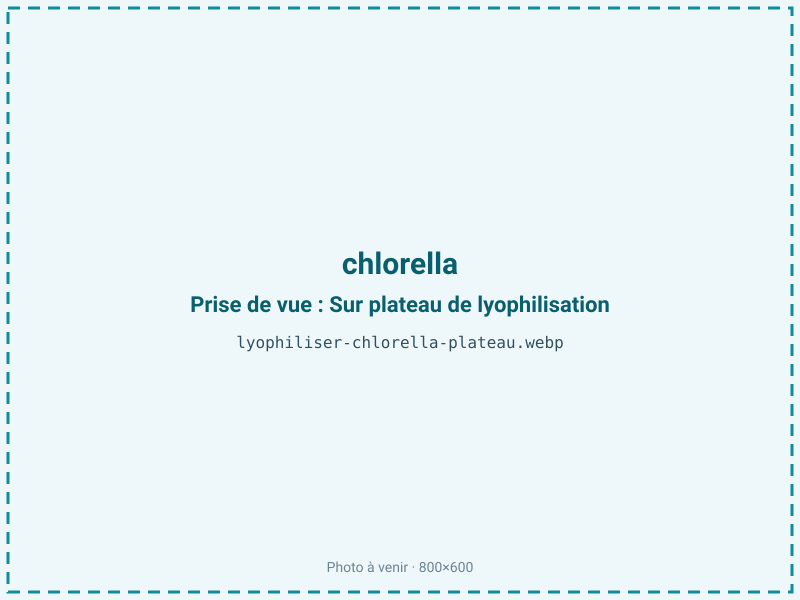
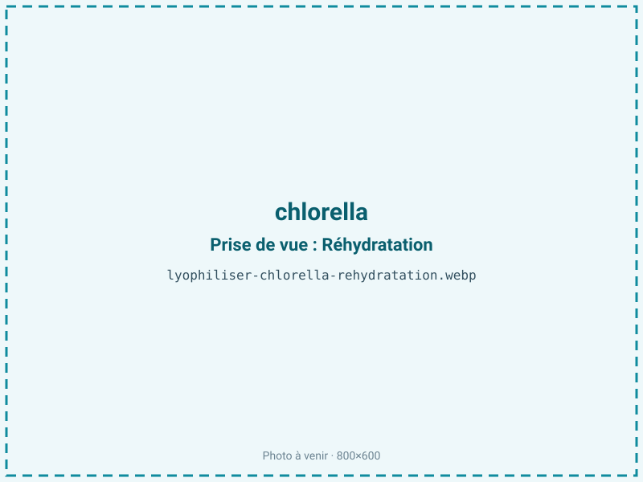

Lyophiliser de la chlorella
La chlorella fraîche, récoltée en suspension, se dégrade en quelques heures : chlorophylle et acides gras polyinsaturés s'oxydent, la couleur vire. La lyophilisation fige la biomasse à froid en une poudre verte stable de 12 à 24 mois, qui préserve pigments, protéines (jusqu'à 55 % de la matière sèche) et parois cellulaires actives, sans le goût cuit du séchage à chaud.

En bref
Comment chlorella se comporte à la lyophilisation
La chlorella est une micro-algue unicellulaire d'eau douce dont chaque cellule est enfermée dans une paroi épaisse de cellulose et de sporopollénine, particulièrement résistante. Concentrée après récolte, la pâte titre environ 80 % d'eau, autour de 50 % de protéines sur sec, 10 % de lipides riches en acides gras polyinsaturés, et une forte charge de chlorophylle a et b.
À la congélation, l'eau intracellulaire cristallise mais la paroi rigide résiste à l'éclatement : c'est pourquoi une chlorella à paroi brisée (broyée avant ou après séchage) est souvent demandée pour rendre les nutriments biodisponibles. À la sublimation, le front progresse dans une pâte dense qui doit être étalée finement pour éviter un cœur humide. Les molécules sensibles sont la chlorophylle, qui brunit à la chaleur et à la lumière, et les acides gras polyinsaturés, qui s'oxydent au contact de l'oxygène. Le froid du procédé évite la dégradation thermique du pigment, mais l'exposition des lipides après retrait de l'eau impose une atmosphère protégée.
Paramètres de cycle
Concentrer la biomasse par centrifugation jusqu'à une pâte, puis congeler rapidement à −30 à −40 °C pour limiter la taille des cristaux et le stress sur les parois. Étaler en couche fine de 3 à 6 mm : au-delà, la densité de la pâte piège l'humidité et allonge fortement le cycle. En sublimation primaire, une clayette modérée de 20 à 25 °C suffit ; on ne monte pas plus haut pour protéger la chlorophylle. Le palier secondaire, plus long, descend l'aw vers 0,20-0,30.
Cette cible basse se justifie par la priorité donnée à la stabilité du pigment et à l'absence de tout risque microbien dans une poudre destinée aux compléments. La fraction grasse reste un point de vigilance : plutôt que de compter sur une monocouche d'eau, on sécurise les lipides par exclusion de l'oxygène. Le critère d'arrêt combine mesure d'aw et poudre parfaitement friable.
Pièges connus
- Paroi cellulaire : préciser si un broyage est attendu.
- Sensible à l'oxydation, prévoir une barrière.



Variantes & provenance
Selon la souche — Chlorella vulgaris ou pyrenoidosa — l'épaisseur de paroi et le profil pigmentaire varient, ce qui modifie la demande de broyage. La provenance et le mode de culture pèsent lourd : une biomasse issue de photobioréacteur fermé est plus propre et régulière qu'une culture en bassin ouvert, plus chargée en matière étrangère et à filtrer davantage. Le taux de concentration de la pâte avant congélation conditionne le rendement et la durée de cycle : une pâte trop liquide allonge la sublimation. Enfin, le choix de livrer une poudre à paroi intacte ou à paroi brisée change l'étape de broyage et l'atmosphère de conditionnement, la paroi brisée exposant davantage les lipides internes à l'oxydation.
Conservation & DLUO
La chlorella porte une fraction lipidique de l'ordre de 10 %, riche en acides gras polyinsaturés : son facteur limitant est donc double, oxydation de ces lipides et dégradation de la chlorophylle par la lumière et l'oxygène. Pour la fraction grasse, l'optimum de stabilité oxydative se situe théoriquement entre aw 0,30 et 0,50, car en dessous de 0,30 on retire la monocouche d'eau qui protège les lipides et le rancissement s'accélère. La chlorella est un cas particulier : la protection du pigment et la sécurité microbiologique poussent vers une aw plus basse, de 0,20 à 0,30, et l'on compense alors la moindre protection des lipides par une exclusion stricte de l'oxygène. Le conditionnement barrière opaque, inertage azote et absorbeur d'oxygène est indispensable. Comptez 12 à 24 mois ainsi, à l'abri de la lumière ; un stockage au frais ralentit à la fois l'oxydation et la perte de couleur.
12 à 24 mois en barrière opaque.
Estimez selon votre emballage :
Face aux autres procédés de séchage
Le séchage à l'air chaud ou en tambour, encore courant pour la chlorella industrielle, brunit la chlorophylle et donne le goût cuit et herbacé caractéristique des poudres bon marché ; il dégrade aussi une part des acides gras polyinsaturés. L'atomisation impose une montée en température rapide, défavorable au pigment. Le micro-ondes sous vide limite la chaleur mais peine à préserver la couleur verte vive autant que le froid. La lyophilisation conserve la teinte, l'intégrité des protéines et des lipides, et donne une poudre à la saveur plus neutre : c'est le procédé retenu pour une chlorella premium, au prix d'un coût énergétique supérieur qui se justifie sur ce marché à forte valeur.
Marchés & applications
La chlorella lyophilisée vise le marché des compléments alimentaires premium (cures détox, riches en chlorophylle et en fer), la nutrition sportive et les superaliments en poudre. On la retrouve en gélules, en comprimés et en poudre à diluer, souvent à paroi brisée pour la biodisponibilité, ainsi qu'en colorant et ingrédient nutritionnel pour barres et boissons vertes. Les clients types sont les marques de compléments, les façonniers de nutrition et les distributeurs de superaliments qui cherchent une couleur et un profil nutritionnel supérieurs aux poudres séchées à chaud.
- Compléments détox
- Poudre nutritionnelle premium
Questions fréquentes — chlorella
Faut-il briser la paroi cellulaire de la chlorella ?
Oui le plus souvent : la paroi épaisse de cellulose limite l'assimilation des nutriments. Un broyage, avant ou après lyophilisation, donne une poudre paroi brisée plus biodisponible.
La lyophilisation garde-t-elle la couleur verte ?
Oui, car le procédé n'apporte pas de chaleur qui brunirait la chlorophylle. La poudre reste d'un vert soutenu, à condition d'un conditionnement opaque.
Quel est le ratio de la chlorella ?
Environ 6:1 à partir d'une pâte concentrée : il faut à peu près 600 g de biomasse humide pour 100 g de poudre.
Pourquoi une barrière azotée est-elle nécessaire ?
Parce que la chlorella contient environ 10 % de lipides polyinsaturés et de la chlorophylle, deux fractions oxydables. L'azote et un absorbeur d'oxygène préviennent le rancissement et la perte de couleur.
Chlorella ou spiruline, même traitement ?
Le procédé à froid est proche, mais la chlorella a une paroi rigide qui impose souvent un broyage, contrairement à la spiruline filamenteuse plus tendre.
La lyophilisation détruit-elle les nutriments ?
Non, le froid préserve protéines, vitamines et pigments bien mieux que le séchage à chaud ; c'est l'un de ses principaux atouts pour la chlorella.
Peut-on la conserver à température ambiante ?
Oui en barrière opaque inertée, 12 à 24 mois. Un stockage au frais prolonge la couleur et retarde le rancissement des lipides.
Prochaine étape : envoyez-nous 200 g
Vous avez les repères de la chlorella. La suite logique : nous envoyer un échantillon et repartir avec une fiche technique sur votre produit — rendement, aw finale, coût au kilo.
Tester la chlorella — 250 à 500 €Déductible de votre premier lot.